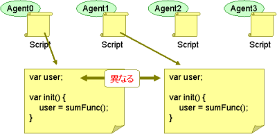
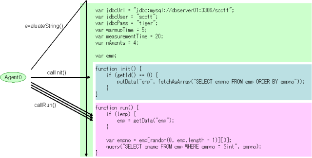

JdbcRunnerでは負荷テストのシナリオをスクリプトで記述します。この章ではスクリプトの書き方について説明します。
JdbcRunnerではJavaScriptを用いて負荷シナリオを記述します。JavaScriptの実装としては、 Mozilla Rhino を利用しています。
Mozilla Rhinoは少し古いバージョンがSun JDK 6以降に含まれていますので、文法の確認などであればこれを使ってすぐに行うことができます。JavaScriptはかなり奥の深いプログラミング言語なのですが、JdbcRunnerを動かすためだけであればとりあえず変数の扱い方、if文、それからfor文さえ覚えておけば十分かと思います。
> jrunscript
js> var a = 1
js> var b = 2
js> a + b
3.0
js> if (a < 2) { b = 10 } else { b = 20 }
10.0
js> var sum = 0
js> for (var i = 1; i <= 100; i++) { sum += i }
5050.0
Mozilla RhinoにはJavaScriptの純粋な言語仕様しか実装されていないので、ウェブブラウザで用いられるdocumentオブジェクトなどはありません。
js> document.write("test")
script error: sun.org.mozilla.javascript.internal.EcmaError:
ReferenceError: "document" is not defined. (<STDIN>#1) in <STDIN> at line number 1
Mozilla Rhinoの特長として、スクリプトからJavaのクラスを呼び出せる点があります。いろいろ使い道はあるのですが、特にJavaのコレクションクラスを利用できるところが便利です。
js> var map = new java.util.HashMap()
js> map.put("7788", "scott")
js> map.put("7839", "king")
js> map.get("7788")
scott
js> map.keySet()
[7839, 7788]
JdbcRunnerのエージェントは、それぞれが独立したスクリプト実行環境を持っています。
そのためあるエージェントでグローバル変数を更新しても、その内容は他のエージェントには見えません。スクリプトを作成する際は、この点に注意してプログラミングを行ってください。
エージェント間でデータを共有したい場合は、共有データをデータベースにINSERTしておくか、ツールが提供するputData()、getData()ファンクションを利用することができます。
負荷シナリオのスクリプトを書くにあたっては、以下のルールがあります。
以下のサンプルを用いて説明します。
var jdbcUrl = "jdbc:mysql://dbserver01:3306/scott";
var jdbcUser = "scott";
var jdbcPass = "tiger";
var warmupTime = 5;
var measurementTime = 20;
var nAgents = 4;
var emp;
function init() {
if (getId() == 0) {
putData("emp", fetchAsArray("SELECT empno FROM emp ORDER BY empno"));
}
}
function run() {
if (!emp) {
emp = getData("emp");
}
var empno = emp[random(0, emp.length - 1)][0];
query("SELECT ename FROM emp WHERE empno = $int", empno);
}
JdbcRunnerでは設定パラメータをコマンドラインオプションで指定するほかに、特定のグローバル変数を宣言することでも行うことができます。
var jdbcUrl = "jdbc:mysql://dbserver01:3306/scott";
var jdbcUser = "scott";
var jdbcPass = "tiger";
var warmupTime = 5;
var measurementTime = 20;
var nAgents = 4;
これはコマンドラインに以下のオプションを設定することと同じです。
> java JR test.js -jdbcUrl jdbc:mysql://dbserver01:3306/scott
-jdbcUser scott
-jdbcPass tiger
-warmupTime 5
-measurementTime 20
-nAgents 4
グローバル変数とコマンドラインオプションを両方設定した場合は、コマンドラインオプションの設定が優先されます。固定的なパラメータをスクリプト内で設定しておくと便利です。
また、設定パラメータと関係ないグローバル変数を宣言しても特に問題はありません。ただし、変数名が設定パラメータ名と重複しないように注意してください。
var emp;
スクリプトを作成する際は、トップレベルのスコープになるべく処理を書かないようにしてください。JdbcRunnerは最初にスクリプトをコンパイルしますが、その際にトップレベルのスコープに書いたロジックが実行されます。この時点ではデータベースにまだ接続していないので、データベース操作などを行おうとするとエラーになります。
エージェントがスクリプトにアクセスするパターンを図にすると以下のようになります。
初期化処理をinit()、測定時に行う処理をrun()、終了処理をfin()ファンクションとして定義します。init()とfin()は省略しても構いません。以下はinit()とrun()のみを定義する例です。
function init() {
if (getId() == 0) {
putData("emp", fetchAsArray("SELECT empno FROM emp ORDER BY empno"));
}
}
function run() {
if (!emp) {
emp = getData("emp");
}
var empno = emp[random(0, emp.length - 1)][0];
query("SELECT ename FROM emp WHERE empno = $int", empno);
}
JavaScriptそのものにはデータベースアクセス機能はありませんので、ツール側でquery()、commit()などの独自ファンクションを用意しています。これらのファンクションを利用してトランザクションを組み立てていきます。
スクリプトのテンプレートをscripts/template.jsに用意してあります。最初はこれをコピーして利用すると便利です。
/*
* JdbcRunner script template
*/
// JdbcRunner settings -----------------------------------------------
// Oracle Database
// var jdbcUrl = "jdbc:oracle:thin://@localhost:1521/ORCL";
// MySQL
var jdbcUrl = "jdbc:mysql://localhost:3306/test";
// PostgreSQL
// var jdbcUrl = "jdbc:postgresql://localhost:5432/postgres";
var jdbcDriver = "";
var jdbcUser = "";
var jdbcPass = "";
var isLoad = false;
var warmupTime = 10;
var measurementTime = 60;
var nTxTypes = 1;
var nAgents = 1;
var connPoolSize = nAgents;
var stmtCacheSize = 10;
var isAutoCommit = true;
var sleepTime = 0;
var throttle = 0;
var isDebug = false;
var isTrace = false;
var logDir = ".";
// Application settings ----------------------------------------------
// JdbcRunner functions ----------------------------------------------
function init() {
if (getId() == 0) {
// This block is performed only by Agent 0.
}
}
function run() {
}
function fin() {
if (getId() == 0) {
// This block is performed only by Agent 0.
}
}
// Application functions ---------------------------------------------